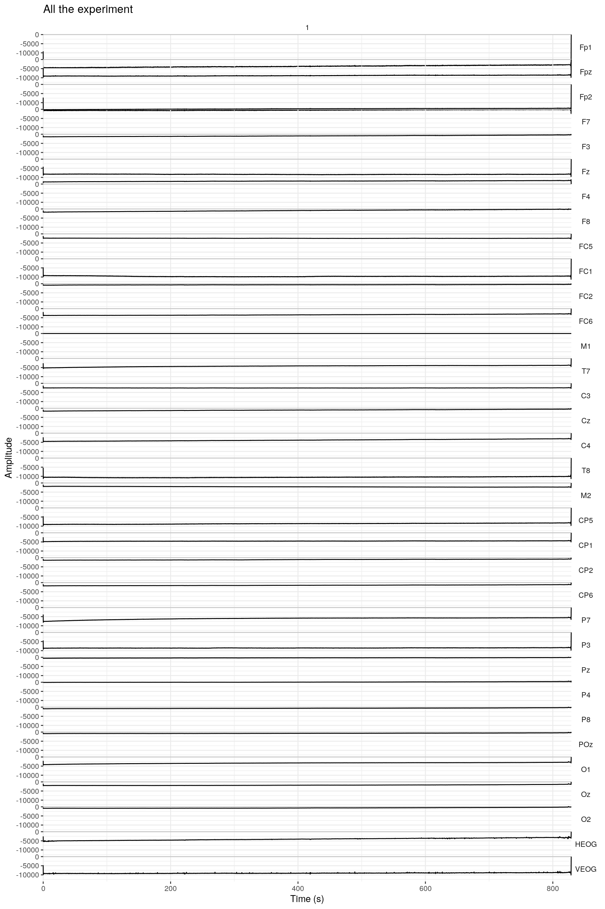
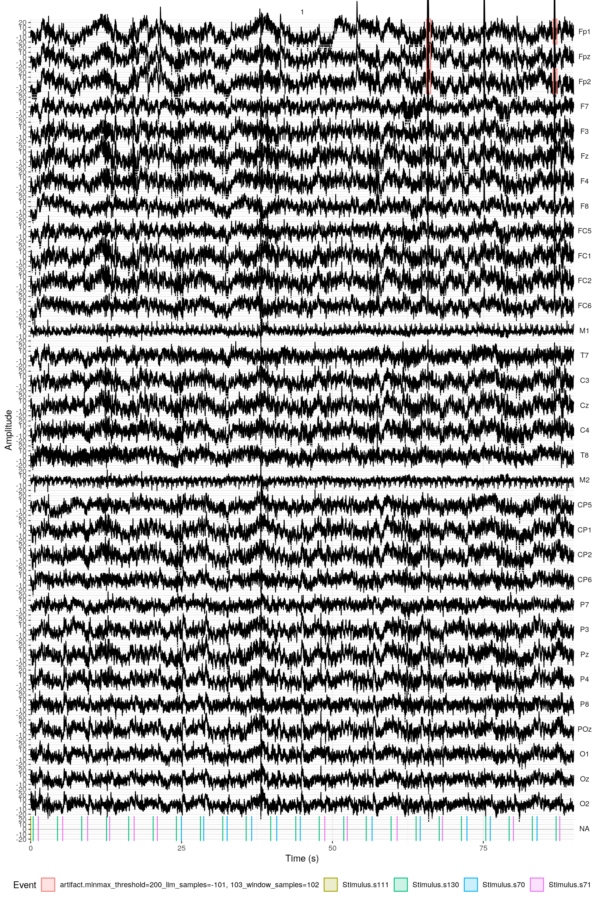
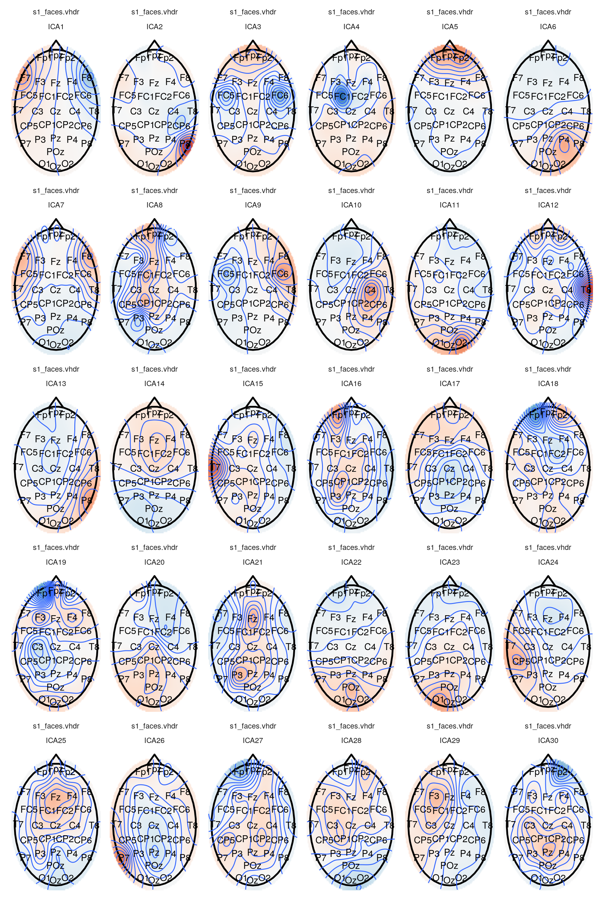
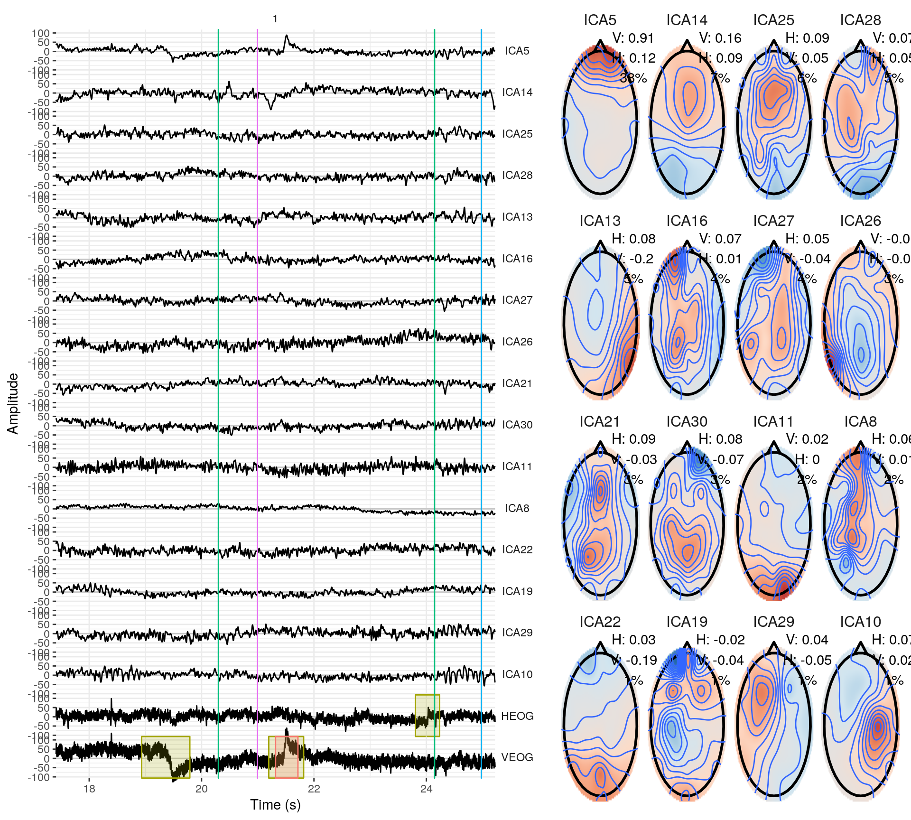
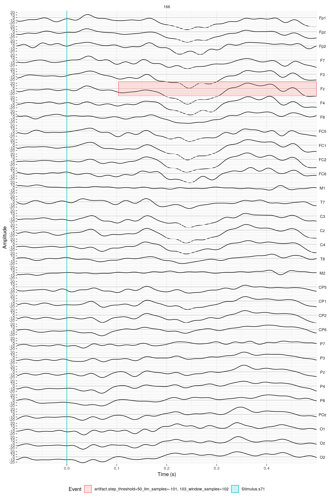
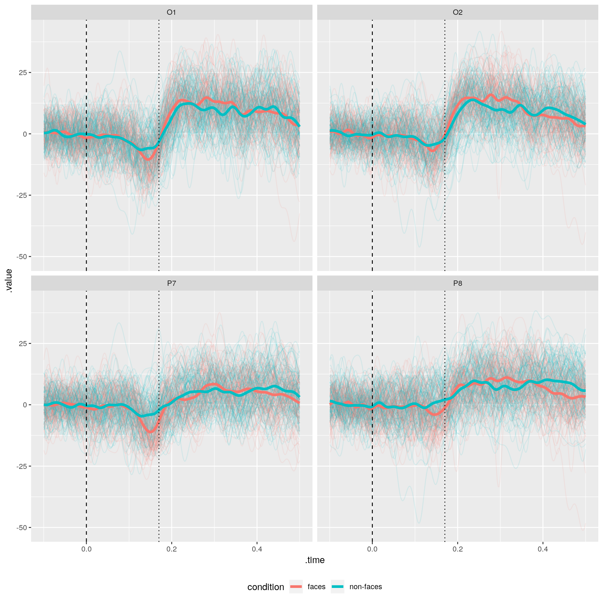
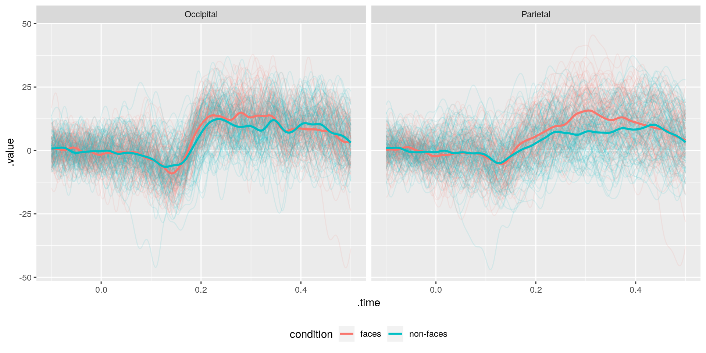
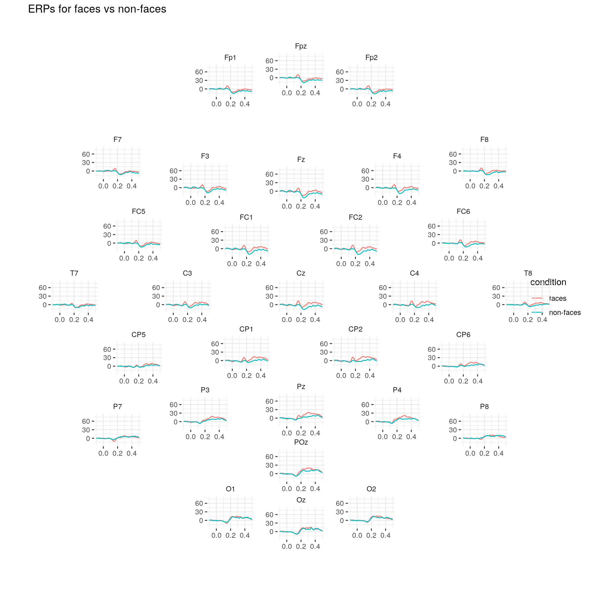
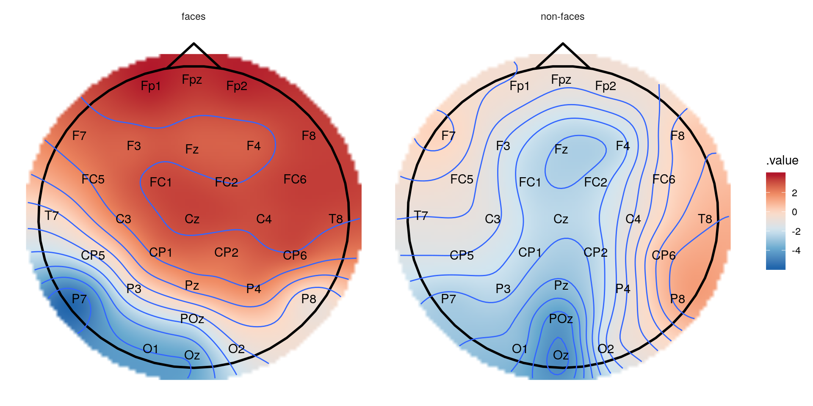
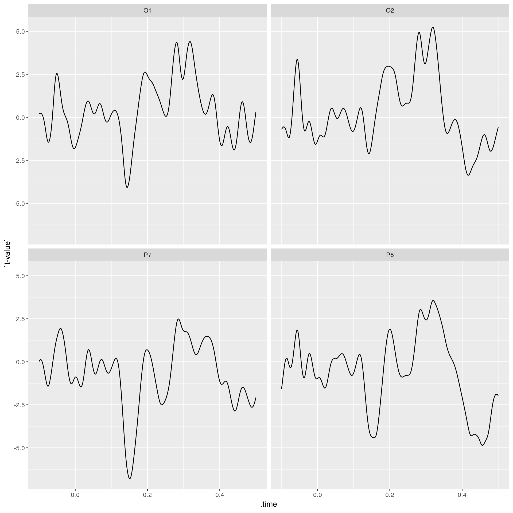

Introduction - Preprocessing and visualization of EEG data.
Bruno Nicenboim
2019-05-16
Source:vignettes/intro.Rmd
intro.RmdThe package eeguana provides a framework for doing simple pre-processing with specialized functions (starting with eeg_ and ch_) and manipulating EEG data with dplyr verbs (e.g., mutate, filter, summarize) extended to a new class eeg_lst, and ggplot wrapper functions. The new class is inspired by tidyverse principles but it’s not really “tidy” (due to space considerations), it’s a list of (i) a wide table that contains the signal amplitudes at every sample point of the EEG, (ii) an events table with information about markers (or triggers), blinks and other exported information, and (iii) a long table with experimental information, such as participant (recording), conditions, etc.
While it’s possible to transform the eeg_lst to a data.frame, data.table or a tibble (with as.data.frame(), as.data.table() and as_tibble()), the motivation for manipulating the data in the eeg_lst format has to do with size considerations. In this case, the original file was 113 MB, converting it to a long format entails a lot of repetition and generates an object of 556 MB. While this will still work here, a long format quickly becomes prohibitive in real settings with longer recordings.
Working with eeguana
Dplyr verbs always return an eeg_lst object, which allows us to use magrittr’s pipe, %>% (see ?`dplyr-eeguana`). In addition, eeg_/ch_ functions will also return an eeg_lst unless they have a suffix _tbl that indicates they return a data frame. In general, we will work with the eeg_lst, unless we want to modify the channels information (with channels_tbl()) or the events table containing markers, artifacts ans custom annotations (whith events_tbl).
A practical example: the N170 effect
Here, I exemplify the use of eeguana with EEG data from BrainVision 1.0. The data belong to a simple experiment where a participant was presented 100 faces and 100 assorted images in random order. The task of the experiment was to mentally count the number of faces.
First we download the data:
download.file("http://www.ling.uni-potsdam.de/~nicenboim/files/s1_faces.vhdr",
mode = "wb", destfile = "./s1_faces.vhdr"
)
download.file("http://www.ling.uni-potsdam.de/~nicenboim/files/s1_faces.vmrk",
mode = "wb", destfile = "./s1_faces.vmrk"
)
download.file("http://www.ling.uni-potsdam.de/~nicenboim/files/s1_faces.eeg",
mode = "wb", destfile = "./s1_faces.eeg"
)BrainVision 1.0 exports three files: s1_faces.vhdr, s1_faces.vmrk, and s1_faces.eeg. The file s1_faces.vhdr contains the metadata and links to the other two files, s1_faces.vmrk contains the triggers and other events in the samples, and s1_faces.eeg contains the signals at every sample for every channel recorded.
library(dplyr)
library(ggplot2)
library(eeguana)
set.seed(123) # ICA will always find the same componentsWe first need to read the data:
faces <- read_vhdr("s1_faces.vhdr")
#> Reading file s1_faces.vhdr...
#> # Data from s1_faces.eeg was read.
#> # Data from 1 segment(s) and 34 channels was loaded.
#> # Object size in memory 113.4 MbThe function read_vhdr() creates a list with data frames for the signal, events, segments information, and incorporates in its attributes generic EEG information.
faces
#> # EEG data:
#>
#> # Signal table:
#> .id .sample Fp1 Fpz Fp2 F7 F3
#> 1: 1 1 -17878.56 -8921.395 -14028.81 -284.2541 -1378.1467
#> 2: 1 2 -17903.75 -8948.022 -14056.53 -303.9134 -1400.6560
#> 3: 1 3 -17916.55 -8961.906 -14070.91 -307.1683 -1407.8466
#> 4: 1 4 -17918.17 -8963.691 -14068.63 -299.8859 -1401.9985
#> 5: 1 5 -17917.71 -8965.658 -14069.16 -294.7915 -1401.2996
#> ---
#> 424484: 1 424484 -16094.71 -8234.730 -13505.21 609.9043 -236.9552
#> 424485: 1 424485 -16140.11 -8280.301 -13547.56 603.1918 -311.0485
#> 424486: 1 424486 -16145.24 -8275.078 -13528.22 541.3096 -291.0218
#> 424487: 1 424487 -16165.22 -8294.479 -13546.50 467.7130 -302.0740
#> 424488: 1 424488 -16167.39 -8305.199 -13561.12 576.3062 -319.2688
#> Fz F4 F8 FC5 FC1 FC2 FC6
#> 1: -8077.128 1167.489 -1663.4490 -2315.080 -9040.689 -795.0549 -3665.146
#> 2: -8101.660 1145.292 -1685.9034 -2338.859 -9064.137 -816.1298 -3688.133
#> 3: -8114.331 1138.028 -1691.4203 -2343.475 -9071.438 -823.4675 -3690.046
#> 4: -8116.114 1139.702 -1683.0713 -2333.746 -9065.608 -817.9690 -3681.642
#> 5: -8119.442 1136.373 -1684.2664 -2326.648 -9061.397 -817.2882 -3679.563
#> ---
#> 424484: -7991.669 1977.146 -162.8618 -2290.511 -9349.164 -318.8641 -2805.395
#> 424485: -8045.019 1938.122 -183.0542 -2424.133 -9410.679 -364.1038 -2833.090
#> 424486: -8032.237 1965.358 -132.3712 -2291.431 -9379.728 -342.3297 -2811.445
#> 424487: -8052.393 1930.877 -180.4978 -2361.589 -9381.456 -358.2924 -2868.325
#> 424488: -8065.579 1927.474 -188.0929 -2368.595 -9409.171 -363.8277 -2853.797
#> M1 T7 C3 Cz C4 T8 M2
#> 1: 0 -5156.998 -2466.320 -1568.4097 -4427.577 -10351.511 -1845.363
#> 2: 0 -5184.417 -2490.411 -1591.3053 -4450.049 -10372.402 -1850.862
#> 3: 0 -5186.146 -2495.726 -1597.7970 -4454.775 -10378.323 -1845.087
#> 4: 0 -5174.358 -2487.358 -1591.5627 -4449.590 -10373.983 -1836.370
#> 5: 0 -5170.146 -2481.878 -1588.5833 -4446.334 -10370.489 -1841.961
#> ---
#> 424484: 0 -3703.158 -2301.288 -395.4219 -2952.459 -9502.499 -2128.771
#> 424485: 0 -3834.959 -2372.439 -444.3945 -2994.426 -9465.224 -2179.546
#> 424486: 0 -3773.260 -2312.064 -419.6414 -2975.410 -9389.198 -2153.340
#> 424487: 0 -3746.392 -2304.304 -426.3353 -2986.242 -9369.264 -2141.644
#> 424488: 0 -3615.768 -2358.720 -437.9209 -2984.145 -9521.864 -2130.978
#> CP5 CP1 CP2 CP6 P7 P3 Pz
#> 1: -8938.128 -4755.838 -1369.6688 -1729.708 -7513.455 -8512.474 -537.63159
#> 2: -8963.231 -4778.917 -1391.3324 -1750.029 -7535.836 -8533.438 -557.97095
#> 3: -8969.171 -4784.986 -1397.7506 -1757.532 -7541.739 -8537.741 -561.55725
#> 4: -8957.989 -4775.938 -1391.9026 -1754.553 -7530.282 -8529.099 -552.78510
#> 5: -8950.726 -4772.205 -1388.7207 -1755.197 -7524.361 -8523.562 -549.19885
#> ---
#> 424484: -8037.571 -4200.332 -677.7635 -1046.501 -5433.473 -8150.485 -34.94090
#> 424485: -8083.840 -4253.405 -721.7708 -1080.431 -5470.565 -8197.932 -79.35287
#> 424486: -8027.603 -4225.636 -702.5348 -1048.874 -5474.501 -8173.215 -60.83399
#> 424487: -8046.398 -4230.160 -709.1735 -1040.856 -5488.533 -8182.244 -64.40166
#> 424488: -8060.742 -4244.541 -712.0606 -1053.931 -5478.491 -8187.780 -69.53255
#> P4 P8 POz O1 Oz O2 HEOG
#> 1: -99.10343 -875.6397 -852.6708 -4117.080 -1950.149 -817.4540 -5006.420
#> 2: -117.14455 -892.3933 -871.1710 -4136.997 -1965.578 -825.3984 -5027.017
#> 3: -122.82701 -892.9816 -873.9114 -4138.725 -1965.137 -824.5893 -5037.775
#> 4: -117.75130 -886.6740 -866.0771 -4126.606 -1957.450 -823.7434 -5033.031
#> 5: -117.82441 -885.3681 -865.5070 -4127.543 -1967.270 -834.0415 -5031.210
#> ---
#> 424484: 496.89807 -182.1897 -304.2810 -2730.290 -1170.744 -67.8408 -3137.224
#> 424485: 458.84891 -229.4153 -345.6953 -2777.571 -1209.235 -104.1242 -3216.466
#> 424486: 476.24600 -226.5095 -342.8815 -2794.121 -1232.792 -135.4974 -3136.874
#> 424487: 471.66693 -247.6580 -343.4331 -2790.444 -1224.516 -152.9679 -3105.096
#> 424488: 475.47369 -247.5108 -350.5685 -2804.640 -1245.077 -186.8792 -3162.988
#> VEOG
#> 1: -9116.806
#> 2: -9133.780
#> 3: -9138.781
#> 4: -9134.222
#> 5: -9139.996
#> ---
#> 424484: -8591.514
#> 424485: -8672.283
#> 424486: -8648.578
#> 424487: -8658.159
#> 424488: -8660.311
#>
#> # Events table:
#> .id .type .description .initial .final .channel
#> 1: 1 New Segment 1 1 <NA>
#> 2: 1 Stimulus s111 10528 10528 <NA>
#> 3: 1 Stimulus s130 10742 10742 <NA>
#> 4: 1 Stimulus s71 11175 11175 <NA>
#> 5: 1 Stimulus s130 12806 12806 <NA>
#> ---
#> 401: 1 Stimulus s130 411197 411197 <NA>
#> 402: 1 Stimulus s71 411469 411469 <NA>
#> 403: 1 Stimulus s121 412943 412943 <NA>
#> 404: 1 Stimulus s122 412966 412966 <NA>
#> 405: 1 Stimulus s102 412989 412989 <NA>
#>
#> # Segments table:
#> # A tibble: 1 x 3
#> .id .recording segment
#> <int> <chr> <int>
#> 1 1 s1_faces.vhdr 1
summary(faces)
#> # EEG data:
#> # Sampling rate: 512 Hz.
#> # Size in memory: 113.4 Mb.
#> # Total duration: 00:13:49.
#> # Summary of segments
#> .recording n_segments n_incomplete
#> 1: s1_faces.vhdr 1 0
#> # Summary of events
#> .type .description n
#> 1: New Segment 1
#> 2: Stimulus s102 1
#> 3: Stimulus s111 1
#> 4: Stimulus s121 1
#> 5: Stimulus s122 1
#> 6: Stimulus s130 200
#> 7: Stimulus s70 100
#> 8: Stimulus s71 100We see that there is no electrode positions in the object, but since we know that the layout was a standard 10/20, we’ll add this layout to the object, using the dataset layout_32_1020.
channels_tbl(faces)
#> # A tibble: 34 x 11
#> .channel number .reference resolution unit radius theta phi .x .y
#> <chr> <chr> <chr> <dbl> <chr> <dbl> <dbl> <dbl> <dbl> <dbl>
#> 1 Fp1 Ch1 "" 1 micr… NA NA NA NA NA
#> 2 Fpz Ch2 "" 1 micr… NA NA NA NA NA
#> 3 Fp2 Ch3 "" 1 micr… NA NA NA NA NA
#> 4 F7 Ch4 "" 1 micr… NA NA NA NA NA
#> 5 F3 Ch5 "" 1 micr… NA NA NA NA NA
#> 6 Fz Ch6 "" 1 micr… NA NA NA NA NA
#> 7 F4 Ch7 "" 1 micr… NA NA NA NA NA
#> 8 F8 Ch8 "" 1 micr… NA NA NA NA NA
#> 9 FC5 Ch9 "" 1 micr… NA NA NA NA NA
#> 10 FC1 Ch10 "" 1 micr… NA NA NA NA NA
#> # … with 24 more rows, and 1 more variable: .z <dbl>
## In case the order of the electrodes is different, we do a left_join instead of replacing the table:
channels_tbl(faces) <- select(channels_tbl(faces), .channel) %>%
left_join(layout_32_1020)
#> Joining, by = ".channel"The plots that eeguana produce are ggplot objects that can be modified like regular ggplot.
plot(faces) +
ggtitle("All the experiment")
#> # Downsampling from 512Hz to 3.05Hz.
#> # Using the following factor(s) q: 3, 2, 7, 4
#> # Object size in memory 760.1 Kb
Pre-processing
Filtering
We apply a band pass filter of 0.1 to 30 Hz to all the channels except the EOG channels, where we apply a stronger filter to be able to detect eye movements later. We don’t segment yet, because discontinuities in the signal create artifacts on the edges.
ICA
We want to apply ICA to as much data as possible, but to “representative” data, that is part of the experiments and not when the participants are moving or reading the instructions. For the same reason, we want to the ignore “crazy” artifacts: regions with extreme amplitudes in the signal.
We first cut a large segment that excludes data before and after the experiment was ran using eeg_segment() (that is, only data from the marker “s111” to “s121”), and then we mark differences of 100 microvolts between peaks with eeg_artif_minmax().
faces_ls <- eeg_segment(faces_filt, .description == "s111", end = .description == "s121") %>%
eeg_artif_minmax(-HEOG, -VEOG, threshold = 200, window = 200, unit = "ms")
#> # Total of 1 segments found.
#> # Object size in memory 107.5 Mb after segmentation.
#> # Number of intervals with artifacts: 118eeg_artif_minimax() only adds the artifacts in the events table, and doesn’t modify the signal. We can have a look at the type of artifacts that were detected, by plotting the signal and the events with annotate_events(). It would be a good idea to just check a couple of seconds of the signal, for that we use the dplyr “verb” filter() which is overloaded to work with eeg_lsts.
faces_ls %>%
filter(as_time(.sample, unit = "s") %>% between(0, 90)) %>%
plot() +
annotate_events() +
theme(legend.position = "bottom")
#> # Downsampling from 512Hz to 28.44Hz.
#> # Using the following factor(s) q: 9, 2
#> # Object size in memory 764.3 Kb
Now we can run ICA, removing the EOG and reference electrodes, and ignoring the artifacts.
## By default will ignore artifacts
faces_ica <- faces_ls %>%
eeg_ica(-HEOG, -VEOG, -M1, -M2, method = adapt_fast_ICA, ignore = .type == "artifact")
#> # ICA is being done using adapt_fast_ICA...
#> # ICA took 2.93 minsWe can now check the different topographic plots of the ICAs with plot_components(), and their correlation with the EOG channels looking a the summary of the object.

summary(faces_ica)
#> # EEG data:
#> # Sampling rate: 512 Hz.
#> # Size in memory: 107.6 Mb.
#> # Total duration: 00:13:05.
#> # Summary of segments
#> .recording n_segments n_incomplete
#> 1: s1_faces.vhdr 1 0
#> # Summary of events
#> .type .description n
#> 1: artifact minmax_threshold=200_window=102 118
#> 2: Stimulus s111 1
#> 3: Stimulus s121 1
#> 4: Stimulus s130 200
#> 5: Stimulus s70 100
#> 6: Stimulus s71 100
#>
#> # ICA data:
#>
#> # Correlations with EOG channels:
#> $HEOG
#> # A tibble: 30 x 2
#> .ICA cor
#> <chr> <dbl>
#> 1 ICA1 -0.679
#> 2 ICA25 0.121
#> 3 ICA24 -0.105
#> 4 ICA14 0.0875
#> 5 ICA26 -0.0854
#> 6 ICA5 0.0812
#> 7 ICA10 0.0698
#> 8 ICA13 0.0669
#> 9 ICA9 0.0658
#> 10 ICA21 0.0649
#> # … with 20 more rows
#>
#> $VEOG
#> # A tibble: 30 x 2
#> .ICA cor
#> <chr> <dbl>
#> 1 ICA5 0.846
#> 2 ICA3 0.208
#> 3 ICA1 0.204
#> 4 ICA22 -0.189
#> 5 ICA13 -0.172
#> 6 ICA14 0.133
#> 7 ICA30 -0.107
#> 8 ICA16 0.0940
#> 9 ICA23 -0.0723
#> 10 ICA24 -0.0553
#> # … with 20 more rowsWe’ll look closer at the ICA that are more likely to be related to eye movements, and we’ll compare with signals that look like blinks and saccades:
ICAs <- c("ICA1", "ICA2", "ICA3", "ICA4", "ICA5", "ICA6")
faces_ica_b <- faces_ica %>%
eeg_artif_step(HEOG, threshold = 30, window = 200, unit = "ms") %>%
eeg_artif_minmax(VEOG, threshold = 50, window = 200, unit = "ms")
#> # Number of intervals with artifacts: 194
#> # Number of intervals with artifacts: 220We don’t want to plot everything, so we’ll produce the most promising components with eeg_ica_show, and we’ll use some dplyr-verbs to see only a piece of the signal (with filter()), to select the desired components and the eye channels (with select()), and to enlarge the components (because their amplitude is much smaller than EOG channels and it will be difficult to see)
faces_ica_b %>%
## we take a 200 seconds of the signal:
filter(as_time(.sample) %>% between(0, 200)) %>%
## we produce some components for this piece
eeg_ica_show(one_of(ICAs)) %>%
## we select want we want to show:
select(c(ICAs, "VEOG", "HEOG")) %>%
## we enlarge the components
mutate_if(is_component_dbl, ~ . * 10) %>%
## finally we plot here:
plot() +
coord_cartesian(ylim = c(-50, 50)) +
annotate_events() +
theme(legend.position = "bottom")
#> # Downsampling from 512Hz to 12.19Hz.
#> # Using the following factor(s) q: 7, 6
#> # Object size in memory 214.8 Kb
The clearest ones are the ICA1, ICA2, and ICA3, and so we’ll just remove that ones.
Now we’ll segment the data to appropriate check if there are still artifacts.
events_tbl(faces_icaed) <- events_tbl(faces_icaed) %>% filter(!.type %in% "artifact")
faces_seg <- faces_icaed %>%
select(-description, -type) %>%
eeg_segment(.description %in% c("s70", "s71"), lim = c(-.1, .5))
#> # Total of 200 segments found.
#> # Object size in memory 16.5 Mb after segmentation.
faces_seg_artif <- faces_seg %>%
eeg_artif_minmax(-HEOG, -VEOG, threshold = 100, window = 150, unit = "ms") %>%
eeg_artif_step(-HEOG, -VEOG, threshold = 50, window = 200, unit = "ms")
#> # Number of intervals with artifacts: 0
#> # Number of intervals with artifacts: 2
bad <- filter(events_tbl(faces_seg_artif), .type == "artifact") %>% pull(.id) %>% unique()
faces_seg_artif %>%
filter(.id == bad) %>%
select(-VEOG, -HEOG) %>%
plot() +
annotate_events() +
theme(legend.position = "bottom")
faces_seg <- faces_seg_artif %>%
eeg_events_to_NA(.type == "artifact", entire_seg = TRUE, all_chs = FALSE, drop_events = TRUE)
summary(faces_seg)
#> # EEG data:
#> # Sampling rate: 512 Hz.
#> # Size in memory: 16.5 Mb.
#> # Total duration: 00:02:00.
#> # Summary of segments
#> .recording n_segments n_incomplete
#> 1: s1_faces.vhdr 200 1
#> # Summary of events
#> .type .description n
#> 1: Stimulus s70 100
#> 2: Stimulus s71 100Finally, we can baseline the segments:
Visualization
We edit the segmentation information and add more descriptive labels.
faces_seg <- faces_seg %>%
mutate(
condition =
if_else(description == "s70", "faces", "non-faces")
) %>%
select(-type)
faces_seg
#> # EEG data:
#>
#> # Signal table:
#> .id .sample Fp1 Fpz Fp2 F7 F3
#> 1: 1 -50 -0.7196580 2.759307 0.3450389 -1.4088708 3.374299
#> 2: 1 -49 0.4893722 3.738851 1.0007048 -0.6136137 3.609363
#> 3: 1 -48 1.7099243 4.671520 1.7692238 0.3602256 3.886544
#> 4: 1 -47 2.7684216 5.405270 2.4914127 1.4268524 4.163023
#> 5: 1 -46 3.5123990 5.811090 3.0188233 2.5040193 4.407435
#> ---
#> 61596: 200 253 -4.5174001 -3.048146 -4.7281674 10.1911850 6.647471
#> 61597: 200 254 -3.9951366 -3.061167 -5.1472917 9.2225132 5.898219
#> 61598: 200 255 -3.3048688 -3.080869 -5.5520331 8.3100695 5.255760
#> 61599: 200 256 -2.6220511 -3.172196 -5.9692772 7.4213202 4.659662
#> 61600: 200 257 -2.1346583 -3.398437 -6.4368210 6.5022052 4.017326
#> Fz F4 F8 FC5 FC1 FC2
#> 1: 4.145462 3.148020 -1.8678543 0.9494174 1.396600 -2.295472
#> 2: 4.185316 2.698146 -1.0354342 1.3619192 1.659591 -2.791381
#> 3: 4.331762 2.347362 0.1497221 1.7331089 2.006785 -3.048539
#> 4: 4.496402 2.062170 1.5260817 2.0506075 2.391170 -3.088335
#> 5: 4.603069 1.814833 2.9223061 2.3270911 2.774484 -2.934341
#> ---
#> 61596: -8.244183 -13.975129 -8.9200973 8.5855167 -2.556791 -19.409422
#> 61597: -8.950615 -13.711210 -9.9805965 7.5155864 -3.768546 -19.876743
#> 61598: -9.469326 -13.380067 -10.8043484 6.3954286 -5.086511 -20.264585
#> 61599: -9.839479 -13.005664 -11.3855542 5.2179114 -6.483273 -20.574810
#> 61600: -10.129034 -12.624390 -11.7382203 3.9567841 -7.943093 -20.822115
#> FC6 M1 T7 C3 Cz C4
#> 1: -1.2265143 -2.030141 8.253891 -2.2692661 -5.756678 -0.6386102
#> 2: -0.5175638 -1.922150 8.567596 -2.3869240 -5.904498 -1.1213988
#> 3: 0.4669961 -1.785010 8.399222 -2.4886989 -5.770324 -1.5923373
#> 4: 1.5999064 -1.654058 7.787650 -2.5429509 -5.382069 -2.0251474
#> 5: 2.7601396 -1.545839 6.826330 -2.5055904 -4.776398 -2.3730794
#> ---
#> 61596: -16.0129368 4.310870 8.038155 0.9859522 -14.587902 -35.6717209
#> 61597: -17.0540548 4.454409 7.915414 -0.5386313 -15.983657 -36.4573343
#> 61598: -18.0307189 4.482182 7.638785 -2.2261064 -17.525739 -37.1771981
#> 61599: -18.8883871 4.394789 7.120897 -4.0084017 -19.124941 -37.8044267
#> 61600: -19.5813461 4.203761 6.293197 -5.8327858 -20.694241 -38.3088380
#> T8 M2 CP5 CP1 CP2 CP6
#> 1: 4.411867 2.030141 1.89720992 -5.670715 -3.913878 2.2268681
#> 2: 5.992174 1.922150 1.40468412 -5.796751 -4.455980 1.6386382
#> 3: 7.614405 1.785010 0.72521016 -5.786085 -4.853464 1.0359176
#> 4: 8.976447 1.654058 -0.03981994 -5.635499 -5.090930 0.4340056
#> 5: 9.783797 1.545839 -0.76970390 -5.336744 -5.152129 -0.1362994
#> ---
#> 61596: -28.768359 -4.310870 5.05458361 -4.442662 -31.817609 -30.6066626
#> 61597: -30.064498 -4.454409 4.09258379 -5.964765 -33.102451 -31.6523181
#> 61598: -30.937948 -4.482182 2.89345138 -7.703163 -34.334384 -32.6971179
#> 61599: -31.389554 -4.394789 1.50025284 -9.548284 -35.425787 -33.7301306
#> 61600: -31.439194 -4.203761 -0.04682639 -11.394028 -36.291994 -34.7092329
#> P7 P3 Pz P4 P8 POz
#> 1: -2.0317901 -2.7944554 -3.241938 -0.6783762 0.6526893 -1.283504
#> 2: -2.8017583 -3.3464857 -3.841418 -1.4711055 -1.7403654 -2.448701
#> 3: -3.3625560 -3.8187280 -4.396698 -2.1838923 -3.9970489 -3.554637
#> 4: -3.6493206 -4.1456073 -4.870308 -2.7624575 -5.8406820 -4.497626
#> 5: -3.6301192 -4.2663962 -5.219345 -3.1545011 -7.0380085 -5.183308
#> ---
#> 61596: 3.7944482 3.6211732 -12.195073 -27.5117393 -23.3979599 -5.448576
#> 61597: 3.4652648 2.5257150 -13.412815 -28.1509935 -23.3631605 -6.249241
#> 61598: 2.7480711 1.2294552 -14.665629 -28.6329868 -22.5144761 -7.081719
#> 61599: 1.7346811 -0.1929194 -15.865267 -28.9438710 -20.8657566 -7.888523
#> 61600: 0.5324018 -1.6683637 -16.928378 -29.0730911 -18.5188139 -8.621436
#> O1 Oz O2 HEOG VEOG
#> 1: -3.65322157 -0.857261 0.8272414 0.3447419 11.224845
#> 2: -4.85519937 -2.340097 -0.7567453 0.4632065 10.759930
#> 3: -5.97389937 -3.806756 -2.3388557 0.5367955 10.289698
#> 4: -6.89709201 -5.103653 -3.7347525 0.5682565 9.816615
#> 5: -7.52750423 -6.086645 -4.7706429 0.5618662 9.343944
#> ---
#> 61596: 3.18783151 -2.716008 -4.8848205 -7.2188242 45.591865
#> 61597: 2.59150349 -3.212819 -3.6260350 -7.3105804 42.675129
#> 61598: 1.80467585 -3.802984 -2.6252375 -7.1852110 40.065422
#> 61599: 0.93631430 -4.439382 -1.9579538 -6.8452634 37.764088
#> 61600: 0.07742928 -5.087588 -1.6836829 -6.2949585 35.770170
#>
#> # Events table:
#> .id .type .description .initial .final .channel
#> 1: 1 Stimulus s71 1 1 <NA>
#> 2: 2 Stimulus s71 1 1 <NA>
#> 3: 3 Stimulus s71 1 1 <NA>
#> 4: 4 Stimulus s71 1 1 <NA>
#> 5: 5 Stimulus s71 1 1 <NA>
#> ---
#> 196: 196 Stimulus s71 1 1 <NA>
#> 197: 197 Stimulus s70 1 1 <NA>
#> 198: 198 Stimulus s71 1 1 <NA>
#> 199: 199 Stimulus s71 1 1 <NA>
#> 200: 200 Stimulus s71 1 1 <NA>
#>
#> # Segments table:
#> # A tibble: 200 x 5
#> .id .recording segment description condition
#> <int> <chr> <int> <chr> <chr>
#> 1 1 s1_faces.vhdr 1 s71 non-faces
#> 2 2 s1_faces.vhdr 2 s71 non-faces
#> 3 3 s1_faces.vhdr 3 s71 non-faces
#> 4 4 s1_faces.vhdr 4 s71 non-faces
#> 5 5 s1_faces.vhdr 5 s71 non-faces
#> 6 6 s1_faces.vhdr 6 s71 non-faces
#> 7 7 s1_faces.vhdr 7 s70 faces
#> 8 8 s1_faces.vhdr 8 s70 faces
#> 9 9 s1_faces.vhdr 9 s70 faces
#> 10 10 s1_faces.vhdr 10 s70 faces
#> # … with 190 more rowsWith some ggplot skills, we can create customized plots. ggplot is overloaded to work on an eeg_lst by first downsampling the signal when necessary, and converting it to a long-format data frame that is feed into ggplot. This object can then be customized. (Notice that the channels, or component names are in a .key column and their amplitude in .value column, and instead of samples there are now .time in seconds).
## ggplot uses internally a table that looks like this:
faces_seg %>% filter(.id %in% 1:3) %>% as_tibble()
#> # A tibble: 31,416 x 8
#> .time .id .recording segment description condition .key .value
#> <dbl> <int> <chr> <int> <chr> <chr> <chr> <dbl>
#> 1 -0.0996 1 s1_faces.vhdr 1 s71 non-faces Fp1 -0.720
#> 2 -0.0977 1 s1_faces.vhdr 1 s71 non-faces Fp1 0.489
#> 3 -0.0957 1 s1_faces.vhdr 1 s71 non-faces Fp1 1.71
#> 4 -0.0938 1 s1_faces.vhdr 1 s71 non-faces Fp1 2.77
#> 5 -0.0918 1 s1_faces.vhdr 1 s71 non-faces Fp1 3.51
#> 6 -0.0898 1 s1_faces.vhdr 1 s71 non-faces Fp1 3.83
#> 7 -0.0879 1 s1_faces.vhdr 1 s71 non-faces Fp1 3.67
#> 8 -0.0859 1 s1_faces.vhdr 1 s71 non-faces Fp1 3.04
#> 9 -0.0840 1 s1_faces.vhdr 1 s71 non-faces Fp1 2.03
#> 10 -0.0820 1 s1_faces.vhdr 1 s71 non-faces Fp1 0.773
#> # … with 31,406 more rows
faces_seg %>%
select(O1, O2, P7, P8) %>%
ggplot(aes(x = .time, y = .value)) +
geom_line(alpha = .1, aes(group = .id, color = condition)) +
stat_summary(
fun.y = "mean", geom = "line", alpha = 1, size = 1.5,
aes(color = condition)
) +
facet_wrap(~.key) +
geom_vline(xintercept = 0, linetype = "dashed") +
geom_vline(xintercept = .17, linetype = "dotted") +
theme(legend.position = "bottom")
We can see here the N170 component in the faces condition for the average trial on a single participant. We can investigate the signal by averaging the channels of the occipital and parietal lobes using transmute(), and the special function, chs_mean(), a wrapper for rowMeans(), which takes as arguments the relevant channels and whether missing values should be omitted from the calculations.
faces_seg %>%
transmute(
Occipital = chs_mean(O1, O2, Oz, na.rm = TRUE),
Parietal = chs_mean(P3, P4, P7, P8, Pz, na.rm = TRUE)
) %>%
ggplot(aes(x = .time, y = .value)) +
geom_line(alpha = .1, aes(group = .id, color = condition)) +
stat_summary(
fun.y = "mean", geom = "line", alpha = 1, size = 1,
aes(color = condition)
) +
facet_wrap(~.key) +
theme(legend.position = "bottom")
We can also calculate the ERPs and then plot them in their layout (and we’ll add the same theme that plot uses for eeg_lsts):
ERP_faces <- faces_seg %>%
group_by(.sample, condition) %>%
summarize_at(channel_names(.), mean, na.rm = TRUE)
ERP_plot <- ERP_faces %>%
ggplot(aes(x = .time, y = .value)) +
geom_line(aes(color = condition)) +
facet_wrap(~.key) +
theme(legend.position = "bottom") +
ggtitle("ERPs for faces vs non-faces") +
theme_eeguana()
ERP_plot %>% plot_in_layout()
Another possibility is to create a topographic plot of the two conditions, by first making segments that include only the interval .1-.2 s after the onset of the stimuli, creating a table with interpolated amplitudes and using the ggplot wrapper plot_topo().
faces_seg %>%
filter(between(as_time(.sample, unit = "s"), .1, .2)) %>%
group_by(condition) %>%
summarize_at(channel_names(.), mean, na.rm = TRUE) %>%
plot_topo() +
annotate_head() +
geom_contour() +
geom_text(colour = "black") +
facet_grid(~condition)
For more specialized plots or analyses, it might be necessary to extract the data in long data frame format first. Even though, we can do this without transforming the object, here, we transform the data first and then we visualize independent t-tests at every electrode and time point.
df <- faces_seg %>%
select(O1, O2, P7, P8) %>%
as_tibble() %>%
# We can use regular dplyr functions now
group_by(.key, .time) %>%
summarize(
`t-value` = t.test(
.value[condition == "faces"],
.value[condition == "non-faces"]
)$statistic
)
df
#> # A tibble: 1,232 x 3
#> # Groups: .key [4]
#> .key .time `t-value`
#> <chr> <dbl> <dbl>
#> 1 O1 -0.0996 0.249
#> 2 O1 -0.0977 0.273
#> 3 O1 -0.0957 0.279
#> 4 O1 -0.0938 0.259
#> 5 O1 -0.0918 0.204
#> 6 O1 -0.0898 0.110
#> 7 O1 -0.0879 -0.0304
#> 8 O1 -0.0859 -0.221
#> 9 O1 -0.0840 -0.459
#> 10 O1 -0.0820 -0.733
#> # … with 1,222 more rowsThen we just load the data frame into ggplot.

However, this can be also done in the without transforming the eeg_lst object:
faces_seg_t <-
faces_seg %>%
select(O1, O2, P7, P8) %>%
group_by(.sample) %>%
summarize_at(channel_names(.), list(t = ~t.test(
.[condition == "faces"],
.[condition == "non-faces"]
)$statistic))
faces_seg_t %>%
ggplot(aes(x = .time, y = .value)) +
geom_line(alpha = .1, aes(group = .id)) +
stat_summary(fun.y = "mean", geom = "line", alpha = 1, size = 1) +
facet_wrap(~.key) +
theme(legend.position = "bottom")